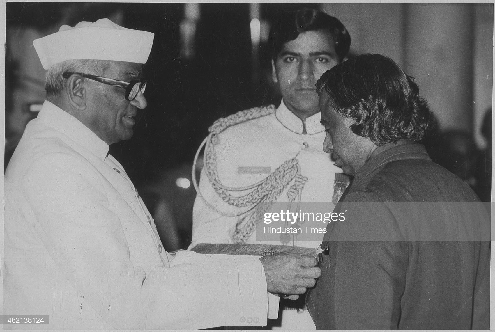

Former Indian President APJ Abdul Kalam Dies At 84

#NEW DELHI, INDIA - JULY 27: (File Photo) Scientist APJ Abdul Kalam receiving Padma Bhushan Award from President Neelam Sanjiva Reddy on March 28, 1981 in New Delhi, India. Avul Pakir Jainulabdeen Abdul Kalam, who was India's President from 2002 to 2007, died in a Shillong hospital on evening of July 27, 2015. Named as the Missile Man of India for his contribution to the ballistic missile and launch vehicle technology, he also played a crucial role in nuclear tests at Pokhran in 1998.